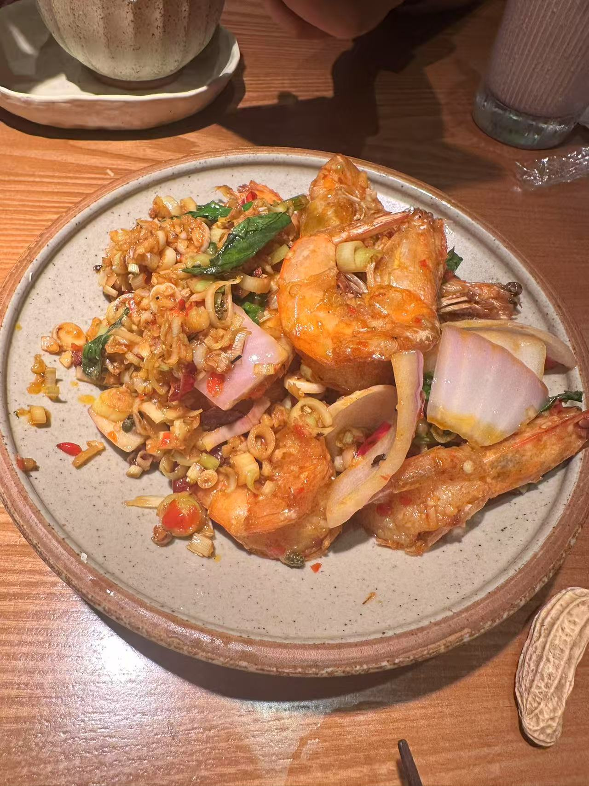
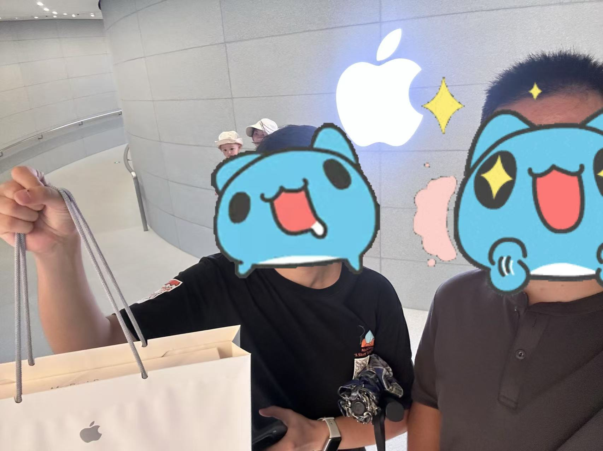

上海 day 1
其实2号就到了，跟表姐去吃了傣族菜，比北京的好吃，而且分量大一些，人均一百但是感觉还是物有所值的：

此行上海主要买macbook也是一个目的，下次写估计就是mac了。

然后就是3号的China Joy，本来以为是游戏展，结果变成主要跟coser“集邮”了，还是第一次体验。
印象深的是确实很多好看的coser和暴雪的腾讯的几家的还有索尼。跟朋友讨论了下，这游戏展确实已经向漫展转变了，去了一趟买了点幻兽帕鲁的周边（甚至出了隐藏款）和守望先锋的dva徽章。
影之刃肯定是没排上的，还遇到了米饭仙人，这哥们挺热情的，他吃米饭是真nb啊。

结束去了萨莉亚，这边萨莉亚餐桌旁边是没餐叉和刀的；还有这边的吉野家也没有小火锅 ，一些餐品也跟北京不一样，但是还是很好吃。晚上吃了食其家，那个汤汁不咋地。